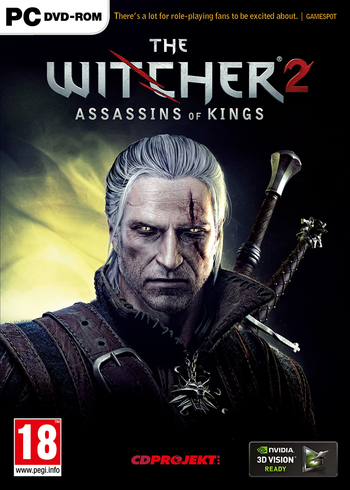

The Witcher 2: Assassins of Kings is a sequel to The Witcher, developed by CD Projekt RED and released on May 17, 2011. Like the original game, it is set after the events of Andrzej Sapkowski's The Witcher series of novels on which the games are based.
A video showing Assassins of Kings was leaked on 16 September 2009, before the game was officially announced. According to CD Projekt, the video was intended for potential publishers, and had been created about six months before it was leaked. It was made using a "very early alpha version" of the game, and voices were provided by CD Projekt staff members rather than the final actors. CD Projekt published a short FAQ in response to the leak, but said that apart from that, they did "not plan any materials to be released soon". The game itself was said to be "still deeply in the development stage", and people should "not expect the game too soon".
Unlike it's predecessor The Witcher 2 was released on PC and Xbox 360 making it available to a broader audience. The PC version was released on May 17, 2011. The Xbox 360 version was released on April 17, 2012.
Buy Witcher 2: Assassin of Kings on Steam Here
Witcher 2: Assassin of Kings Box art